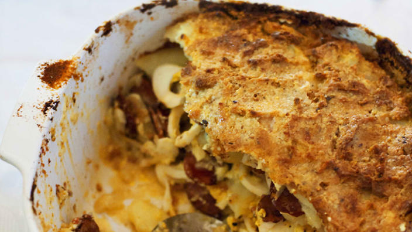

Layered potato casserole

Description
Essentially an Hungarian potato bake, this comfort food recipe includes Csabai sausages, available from European delicatessens. Serve it as a side dish to roast meats.
Ingredients
- 1 kg desiree potatoes
- 1 tsp vegetable oil
- 2 Csabai sausages, sliced
- 60 g butter, melted, plus extra, to grease
- 8 hard-boiled eggs, sliced
- 600 g sour cream
- 35 g stale breadcrumbs
Steps
- Bring potatoes to the boil in a saucepan of salted water. Reduce heat to low and cook for 40 minutes or until just tender. Drain, cool, peel and thickly slice.
- Heat oil in a frying pan over high heat. Add sausages and cook for 2 minutes or until light golden. Drain on paper towel.
- Preheat oven to 200°C. Grease a deep 40 cm round baking dish with butter. Layer one-third of potatoes in the dish, top with half the eggs and half the sausages. Season with salt and pepper. Spoon over 200 g sour cream. Top with half the remaining potatoes, then remaining eggs, sausages and potatoes. Season and spread over remaining 400 g sour cream. Scatter with breadcrumbs and drizzle with butter. Bake for 30 minutes or until golden. Serve.